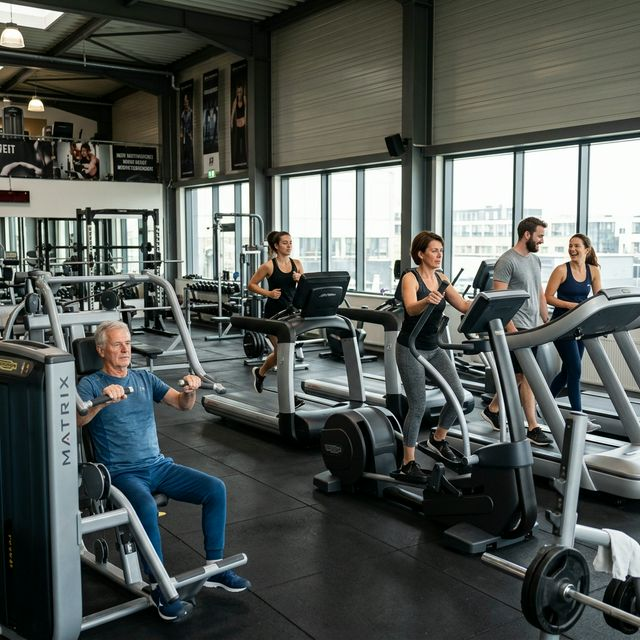
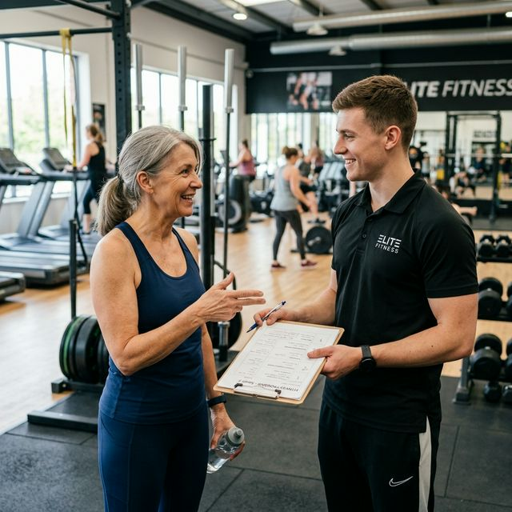

Masz ponad 50 lat i myślisz o siłowni. Albo już o niej myślisz od jakiegoś czasu, ale coś Cię powstrzymuje. Wiek? Wstyd? Poczucie, że to nie miejsce dla Ciebie? Ten artykuł jest właśnie dla Ciebie — i obiecuję, że po jego przeczytaniu te bariery będą wyglądać znacznie mniej groźnie.
Najpierw liczby — bo liczby nie kłamią
📊 Zanim wejdziesz przez drzwi siłowni, warto wiedzieć jedno: jesteś w mniejszości — i to jest Twoja przewaga, a nie problem. A jeśli brakuje Ci samego rozpędu do ruszenia, zajrzyj też do tekstu jak zbudować motywację do ćwiczeń po 50-tce.
Tylko ok. 23% Polaków po 50-tce regularnie uprawia jakikolwiek trening siłowy. To znaczy, że wchodząc na siłownię jesteś dosłownie przed większością swojego pokolenia. Nie ma się czego wstydzić — JEST SIĘ Z CZEGO CIESZYĆ.
Co mówi nauka? Badania są jednoznaczne: regularny trening oporowy po 50-tce redukuje ryzyko niepełnosprawności ruchowej o ok. 20%, poprawia gęstość kości, przyspiesza metabolizm i — co dla wielu zaskakujące — realnie poprawia jakość snu. Nie ma pigułki, która daje te same efekty jednocześnie.

Prawda o siłowni, której nikt Ci nie powie
🤫 Wiesz co naprawdę myślą młodzi ludzie na siłowni, kiedy wchodzi ktoś po pięćdziesiątce?
NIC.
Są zajęci sobą, swoim lustrem, swoimi słuchawkami i swoim programem treningowym. Siłownia to jedno z niewielu miejsc, gdzie obowiązuje niepisana zasada: każdy skupia się na sobie. Nikt nie ocenia Twoich ciężarów, Twojej techniki ani Twojego ciała. Lęk przed oceną jest prawdziwy — ale zagrożenie, które reprezentuje, jest całkowicie wyobrażone. Dla wielu osób po 50-tce to miejsce okazuje się też ważniejsze społecznie, niż się wydaje, o czym piszę szerzej w artykule siłownia po 50-tce jest dla ludzi, nie tylko dla mięśni.
Pierwszy krok: trener personalny — jeden raz wystarczy
🤝 Nie wchodź na siłownię z pytaniem "co tu się robi". Wejdź z konkretnym planem: zarezerwuj 30-minutową sesję z trenerem personalnym przy pierwszej wizycie.
Nie po to, żeby brać lekcje na zawsze. Po to, żeby ktoś pokazał Ci jak obsługuje się sprzęt, jak ustawić ciężary, jak bezpiecznie wykonać 5-6 podstawowych ćwiczeń. JEDNA SESJA — i już wiesz co robić. Większość siłowni oferuje ją bezpłatnie lub za niewielką opłatą przy podpisaniu umowy. Wystarczy zapytać na recepcji. Jeśli chcesz wiedzieć, czego unikać już na starcie, przeczytaj też największe błędy początkujących po 50-tce.

Co powiedzieć trenerowi? Dosłownie to:
Dobry trener natychmiast wie co robić. Jeśli każe Ci na pierwszej sesji robić burpees i sprint na bieżni — ZMIEŃ TRENERA.
Ubierz się tak, żeby dobrze się czuć
👕 Brzmi banalnie. Ale jest ważniejsze niż Ci się wydaje i ma bezpośredni wpływ na jakość treningu.
Stare dresy z lat 90-tych, w których czujesz się jak na działce — zostaw w domu. Nie musisz wyglądać jak z okładki Men's Health. Ale masz wyglądać jak ktoś, kto tu należy i wie po co przyszedł.
Inwestycja minimalna na start:
- Jedna porządna para butów treningowych — nie biegowych, nie tenisowych. Treningowych. Różnica jest realna dla kolan i stawów skokowych, szczególnie jeśli chcesz uniknąć ignorowania bólu stawów.
- Dwie pary wygodnych spodni sportowych, które nie krępują ruchów przy przysiadach i wykrokach.
- Dwie-trzy przewiewne koszulki — funkcjonalne, nie bawełniane (bawełna nasiąka i klei się do ciała).
Kiedy dobrze wyglądasz — lepiej się czujesz. Kiedy lepiej się czujesz — lepiej ćwiczysz. To nie vanity, to prosta psychologia.
Plan na pierwsze 4 tygodnie — prosty jak budowa cepa
📅 Zapomnij o skomplikowanych programach treningowych które widzisz na YouTube. Są projektowane dla 25-latków, nie dla kogoś kto wraca do aktywności po latach przerwy.
Twój plan na pierwszy miesiąc:
- 3 razy w tygodniu — nie 5, niecodziennie. WIĘCEJ NIE ZNACZY LEPIEJ na początku.
- 45 minut maksymalnie — jakość ponad czas spędzony na siłowni.
- Ciężary lekkie — technika ważniejsza niż ego. Zawsze.
- Przerwy między seriami 90-120 sekund — mięśnie i stawy potrzebują regeneracji między ćwiczeniami.
Ważna różnica, którą musisz zapamiętać: ból mięśni dzień po treningu — normalny, to znak, że pracujesz. Ból stawów, kolan, łokci, kręgosłupa podczas ćwiczenia lub po — STOP i konsultacja z fizjoterapeutą lub ortopedą. Te dwa rodzaje bólu to nie to samo. To jeden z tematów, który rozwijam też w artykule o najczęstszych błędach początkujących.
Co zabrać na pierwszą wizytę
🎒 Oto co warto mieć ze sobą:
- Butelka wody — minimum litr. Nawodnienie ma bezpośredni wpływ na wydolność i regenerację.
- Ręcznik — na większości siłowni obowiązkowy, zawsze praktyczny.
- Słuchawki — własna muzyka zmienia atmosferę i poziom koncentracji.
- Telefon z prostą aplikacją do notowania ćwiczeń — zapisuj co robisz, ile, ile serii. BEZ NOTATEK NIE MASZ MIERZALNEGO PROGRESU.
- Dobry nastrój — jedyna rzecz, której absolutnie nie możesz zapomnieć.
Czego nie zabierać: suplementu pre-workout na sam start. Poczekaj z tym minimum miesiąc, aż zrozumiesz, jak reaguje Twoje ciało na sam trening.
Jedna rzecz, której się nie spodziewasz
😲 Po 2-3 tygodniach regularnych treningów wydarzy się coś, na co większość ludzi nie jest przygotowana.
ZACZNIESZ CHCIEĆ TAM WRACAĆ.
Nie z obowiązku. Z potrzeby. Ciało zaczyna pamiętać jak to jest czuć się sprawnym, silnym, lekkim. I zaczyna tego wymagać. Siłownia przestaje być wysiłkiem — a staje się częścią dnia, bez której brakuje czegoś ważnego. To jest moment, w którym zmiana przestaje być projektem, a staje się STYLEM ŻYCIA.
Podsumowanie — co naprawdę stoi na drodze
🚧 Największa bariera nie jest fizyczna. Jest w głowie.
Wiek 50+ nie jest metryką Twojej sprawności — jest metryką Twojego doświadczenia. Wnosisz na siłownię więcej cierpliwości, samoświadomości i determinacji niż 90% dwudziestolatków wokół Ciebie. Oni mają czas i energię. Ty masz to, co oni dopiero wypracują — rozumienie po co to wszystko robisz.
Jedyne co musisz zrobić to wejść przez drzwi pierwszy raz.
Reszta dzieje się sama.
Źródła
- [1] WHO Europe - Physical activity fact sheet.
- [2] CDC - Physical activity guidelines for older adults.
- [3] Hart P.D. et al. Resistance training and functional outcomes in older adults.
- [4] National Institute on Aging - Exercise and physical activity.
- [5] Franco M.R. et al. Older people's perspectives on participation in physical activity.